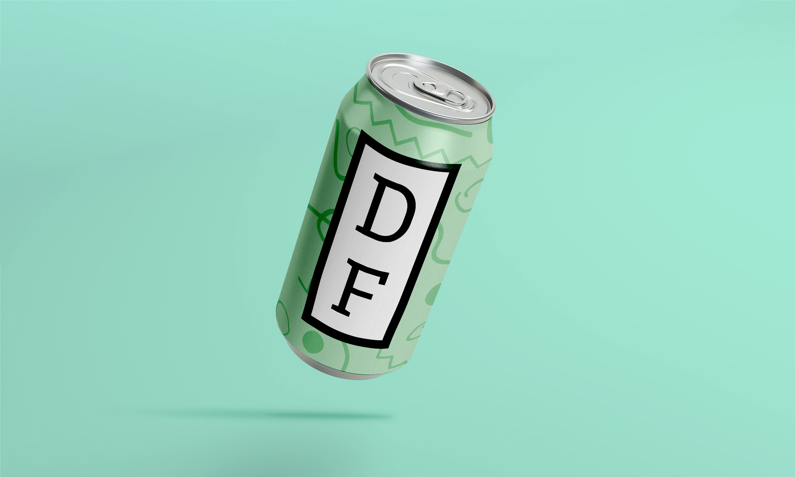
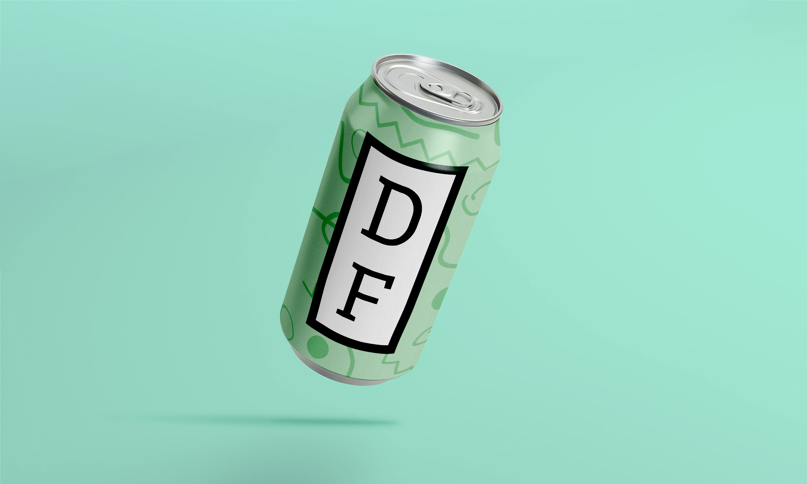

Amandeep Chandan
Aspiring Graphic Designer / Student
Always looking for a chance to express myself and eager to experience & learn within the workplace at hand. I continue to work on having and maintaining a diverse set of skills to mesh and blend into whatever tasks are required of me. While in high school, I earned certifications ranging from Adobe products to Microsoft products.
Featured Projects
View selected projects below. More information can be found at amandeepchandan.com.
School Projects
While in College, I created various projects / assigments made to the professors specifications.
View project / case study 

Work Experience
Technician
Manpower
October 2020 - Present
Operated on computer parts to diagnose problems. Alongside this, accurately found correct computer parts that need to be recovered into designated areas. Quickly promoted due to prior knowledge of how to operate computers and the respective software correctly and efficiently. Working in multiple areas to provide and assist others in the time of need, alongside assisting the company. Strong team-based environment but also to efficiently work little direction from others.
Skills and Accomplishments
- Assisted to meet inventory reduction goals in 2020/2021
- Learned required software such as PuTTY, SAP and Linux
- Improved skills within Excel and Outlook.
Education
Wake Technical Community College
August 2019 to present.
I am currently attempting to graduate whenever possible. however, I may be pursuing breaks to work on other projects and further my skills down the road.
Fuquay Varina High School
June 2015 to June 2019. Earned High School Diplomia
Involved in National Technical Honor Society; awarded certifications in Photoshop, Illustrator, InDesign, Word, and PowerPoint. Helped to lead and improve my design skills to where they are now.